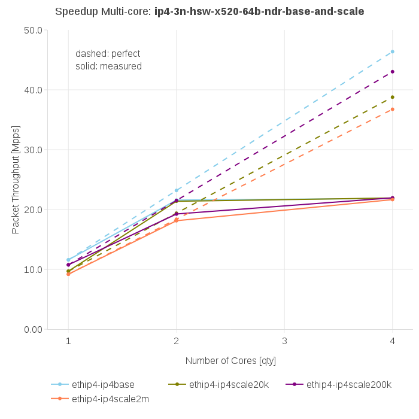
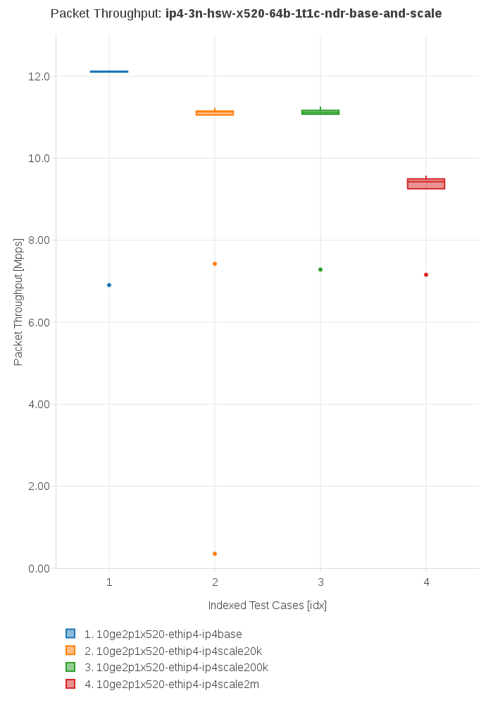

Envisioning information by PAL
Introduction
This document describes possible improvements in data presentation provided by PAL for the Report and the Trending
You can generate a standalone html version of this document using e.g. rst2html5 tool:
rst2html5 --stylesheet graphs_improvements.css graphs_improvements.rst >> graphs_improvements.html
Modifications of existing graphs
New graphs to be added
- Comparison between releases
- Comparison between processor architectures
- Comparison between 2-node and 3-node topologies
- Comparison between different physical testbed instances
- Comparison between NICs
- Other comparisons
Export of static images
- low priority
- make possible to export static images which are available via link on the web page.
- vector formats (svg, pdf) are preferred
Priorities
Target CSIT-18.10
Nice to have in CSIT-18.10
Modifications of existing graphs
The proposed modifications include the changes in:
- the layout of the graphs,
- the data and way how it is presented,
- the test cases presented in the graphs.
The first two points are described below, the last one will be added later as a separate chapter.
Speedup Multi-core
The "Speedup Multicore" graph will display the measured data together with perfect values calculated as multiples of the value measured using one core. The relative difference between measured and ideal values will be displayed in the hover next to each data point.
Description:
Data displayed:
- one or more data series from the same area, keep the number of displayed data series as low as possible (max 5)
- x-axis: number of cores
- y-axis: throughput (measured and perfect) [Mpps], linear scale, beginning with 0
- hover information: Throughput [Mpps], Speedup [1], Relative difference between measured and ideal values [%], Perfect Throughput [%]
- Limits of ethernet links, NICs and PCIe. See Physical performance limits.
Layout:
- plot type: lines with data points
-
- data series format:
-
- measured: solid line with data points
- perfect: dashed line with data points, the same color as "measured"
- title: "Speedup Multi-core: <area, scaling, features, ...>", top, centered, font size 18; configurable in specification file: visible / hidden, text
- x-axis: integers, starting with 1 (core), linear, font size 16, bottom
- x-axis label: "Number of cores [qty]", bottom, centered, font size 16
- y-axis: float, starting with 0, dynamic range, linear, font size 16, left
- y-axis label: "Packet Throughput [Mpps]", middle, left
- legend: list of presented test cases, bottom, left, font size 16; the order of displayed tests is configurable in the specification file
- annotation: text: "dashed: perfect<br>solid: measured", top, left, font size 16
Packet Throughput
The "Packet Throughput" graph will display the measured data using statistical box graph. Each data point is constructed from 10 samples. The statistical data are displayed as hover information.
Description:
Data displayed:
- one or more data points from the same area, keep the number of displayed data points as low as possible (max 10)
- x-axis: indexed test cases
- y-axis: throughput [Mpps], linear scale, beginning with 0
- hover information: statistical data (min, lower fence, q1, median, q3, higher fence, max), test case name
Layout:
- plot type: statistical box
- data series format: box
- title: "Packet Throughput: <area, scaling, features, framesize, cores, ...>", top, centered, font size 18; configurable in specification file: visible / hidden, text
- x-axis: integers, starting with 1, linear, font size 16, bottom; the order of displayed tests is configurable in the specification file
- x-axis label: "Indexed Test Cases [idx]", bottom, centered, font size 16
- y-axis: floats, starting with 0, dynamic range, linear, font size 16, left
- y-axis label: "Packet Throughput [Mpps]", middle, left
- legend: "Indexed Test Cases [idx]", bottom, left, font size 16
Packet Latency
The "Packet Latency" graph will display the measured data using statistical box graph. Each data point is constructed from 10 samples. The statistical data are displayed as hover information.

Description:
Data displayed:
- one or more data points from the same area, keep the number of displayed data points as low as possible (max 10)
- x-axis: data flow directions, indexed test cases
- y-axis: latency min/avg/max [uSec], linear scale, beginning with 0
- hover information: statistical data (min, lower fence, q1, median, q3, higher fence, max), test case name
Layout:
- plot type: statistical box
- data series format: box
- title: "Packet Latency: <area, scaling, features, framesize, cores, ...>", top, centered, font size 16; configurable in specification file: visible / hidden, text
- x-axis: text, font size 16, bottom; the order of displayed tests is configurable in the specification file
- x-axis label: "Indexed Test Cases [idx]", bottom, centered
- y-axis: integers, starting with 0, dynamic range, linear, font size 16, left
- y-axis label: "Packet Latency min/avg/max [uSec]", middle, left
- legend: "Indexed Test Cases [idx]", bottom, left, font size 16
HTTP/TCP Performance
The "HTTP/TCP Performance" graph will display the measured data using statistical box graph separately for "Connections per second" and "Requests per second". Each data point is constructed from 10 samples. The statistical data are displayed as hover information.

Description:
Data displayed:
- requests / connections per second, the same tests configured for 1, 2 and 4 cores (3 data points in each graph)
- x-axis: indexed test cases
- y-axis: requests/connections per second, linear scale, beginning with 0
- hover information: statistical data (min, lower fence, q1, median, q3, higher fence, max), test case name
Layout:
- plot type: statistical box
- data series format: box
- title: "VPP HTTP Server Performance", top, centered, font size 18
- x-axis: integers, font size 16, bottom
- x-axis label: "Indexed Test Cases [idx]", bottom, centered, font size 16
- y-axis: floats, starting with 0, dynamic range, linear, font size 16, left
- y-axis label: "Connections per second [cps]", "Requests per second [rps]", top, left
- legend: "Indexed Test Cases [idx]", bottom, left, font size 16
New graphs to be added
- Comparison between releases
- compare MRR, NDR, PDR between releases
- use as many releases as available
- Comparison between processor architectures
- compare MRR, NDR, PDR between processor architectures
- HSW vs SKX (vs ARM when available)
- Comparison between 2-node and 3-node topologies
- compare MRR, NDR, PDR between topologies
- 3n-skx vs 2n-skx
- Comparison between different physical testbed instances
- compare the results of the same test (MRR, NDR, PDR) run on different instances of the same testbed, e.g. HSW
- HSW vs HSW, SKX vs SKX
- Comparison between NICs
- compare the results of the same test (MRR, NDR, PDR) run on different NICs but on the same instance of a physical testbed.
- x520 vs x710 vs xl710 on HSW
- x710 vs xxv710 on SKX
- Other comparisons
Comparison between releases
This graph will compare the results of the same test from different releases. One graph can present the data from one or more tests logically grouped. See Grouping of tests in graphs for more information. Each data point is constructed from 10 samples. The statistical data are displayed as hover information.

Description:
Data displayed:
- data: packet throughput
- x-axis: release
- y-axis: packet throughput [Mpps], linear scale, beginning with 0
- hover information: statistical data (median, stdev), test case name, release
Layout:
- plot type: scatter with line
- data series format: line with markers
- title: "Packet Throughput: <area, scaling, features, framesize, cores, ...>", top, centered, font size 18
- x-axis: strings, font size 16, bottom
- x-axis label: "Release", bototm, centered, font size 16
- y-axis: floats, starting with 0, dynamic range, linear, bottom, font size 16
- y-axis label: "Packet Throughput [Mpps]", middle, left, font size 16
- legend: "Test Cases", bottom, left, font size 16
Comparison between processor architectures
This graph will compare the results of the same test from the same release run on the different processor architectures (HSW, SKX, later ARM). One graph can present the data from one or more tests logically grouped. See Grouping of tests in graphs for more information. Each data point is constructed from 10 samples. The statistical data are displayed as hover information.

Description:
Data displayed:
- data: packet throughput
- x-axis: processor architecture
- y-axis: throughput [Mpps], linear scale, beginning with 0
- hover information: statistical data (median, stdev), test case name, processor architecture
Layout:
- plot type: scatter with line
- data series format: line with markers
- title: "Packet Throughput: <area, scaling, features, framesize, cores, ...>", top, centered, font size 18
- x-axis: strings, font size 16, bottom, centered
- x-axis label: "Processor architecture", bottom, centered, font size 16
- y-axis: floats, starting with 0, dynamic range, linear, font size 16, left
- y-axis label: "Packet Throughput [Mpps]", middle, left
- legend: "Test cases", bottom, left, font size 16
Comparison between 2-node and 3-node topologies
This graph will compare the results of the same test from the same release run on the same processor architecture but different topologies (3n-skx, 2n-skx). One graph can present the data from one or more tests logically grouped. See Grouping of tests in graphs for more information. Each data point is constructed from 10 samples. The statistical data are displayed as hover information.

Description:
Data displayed:
- data: packet throughput
- x-axis: topology
- y-axis: throughput [Mpps], linear scale, beginning with 0
- hover information: statistical data (median, stdev), test case name, topology
Layout:
- plot type: scatter with line
- data series format: line with markers
- title: "Packet Throughput: <area, scaling, features, framesize, cores, ...>", top, centered, font size 18
- x-axis: strings, font size 16, bottom, centered
- x-axis label: "Topology", bottom, centered, font size 16
- y-axis: floats, starting with 0, dynamic range, linear, font size 16, left
- y-axis label: "Packet Throughput [Mpps]", middle, left, font size 16
- legend: "Test cases", bottom, left, font size 16
Comparison between different physical testbed instances
This graph will compare the results of the same test from the same release run on the same processor architecture, the same topology but different physical testbed instances. One graph can present the data from one or more tests logically grouped. See Grouping of tests in graphs for more information. Each data point is constructed from 10 samples. The statistical data are displayed as hover information.

Description:
Data displayed:
- data: packet throughput
- x-axis: physical testbed instances
- y-axis: throughput [Mpps], linear scale, beginning with 0
- hover information: statistical data (median, stdev), test case name, physical testbed instance
Layout:
- plot type: scatter with line
- data series format: line with markers
- title: "Packet Throughput: <area, scaling, features, framesize, cores, ...>", top, centered, font size 18
- x-axis: strings, font size 16, bottom, centered
- x-axis label: "Physical Testbed Instance", bottom, centered, font size 16
- y-axis: floats, starting with 0, dynamic range, linear, font size 16, left
- y-axis label: "Packet Throughput [Mpps]", middle, left, font size 16
- legend: "Test cases", bottom, left, font size 16
Comparison between NICs
This graph will compare the results of the same test from the same release run on the same processor architecture, the same topology but different NICs. One graph can present the data from one or more tests logically grouped. See Grouping of tests in graphs for more information. Each data point is constructed from 10 samples. The statistical data are displayed as hover information.

Description:
Data displayed:
- data: packet throughput
- x-axis: NICs
- y-axis: packet throughput [Mpps], linear scale, beginning with 0
- hover information: statistical data (median, stdev), test case name, NIC
Layout:
- plot type: scatter with line
- data series format: line with markers
- title: "Packet Throughput: <area, scaling, features, framesize, cores, ...>", top, centered, font size 18
- x-axis: strings, font size 16, bottom
- x-axis label: "NIC", bottom, centered, font size 16
- y-axis: floats, starting with 0, dynamic range, linear, font size 16, left
- y-axis label: "Packet Throughput [Mpps]", middle, left, font size 16
- legend: "Test cases", bottom, left, font size 16
Other comparisons
Other tests results comparisons
- compare packet throughput for vhost vs memif
Other views on collected data
Grouping of tests in graphs
A graph can present results of one or more tests. The tests are grouped according to the defined criteria. In the ideal case, all graphs use the same groups of tests.
The grouping of tests is described in a separate document.
Example of data grouping:
-
- ip4: ip4base, ip4scale20k, ip4scale200k, ip4scale2m
-
- data presented in this order from left to right
- ip6: similar to ip4
- l2bd: similar to ip4.
Sorting of tests presented in a graph
It is possible to specify the order of tests (suites) on the x-axis presented in a graph:
It is possible to specify the order of tests (suites) in the legend presented in a graph:
In both cases the order is defined in the specification file for each plot separately, e.g.:
- type: "plot" <other parameters> sort: - "IP4BASE" - "FIB_20K" - "FIB_200K" - "FIB_2M"
The sorting is based on tags. If more then one test has the same tag, all these tests are included. The tests without listed tags are placed at the end of the list in random order.
Export of static images
Physical performance limits
| Ethernet links | pps @64B |
|---|---|
| 10ge | 14,880,952.38 |
| 25ge | 37,202,380.95 |
| 40ge | 59,523,809.52 |
| 100ge | 148,809,523.81 |
| Ethernet links | bps |
|---|---|
| 64B | |
| IMIX | |
| 1518B | |
| 9000B |
| NIC | pps @64B |
|---|---|
| x520 | 24,460,000 |
| x710 | 35,800,000 |
| xxv710 | 35,800,000 |
| xl710 | 35,800,000 |
| NIC | bw ??B |
|---|---|
| x520 | |
| x710 | |
| xxv710 | |
| xl710 |
| PCIe | bps |
|---|---|
| PCIe Gen3 x8 | 50,000,000,000 |
| PCIe Gen3 x16 | 100,000,000,000 |
| PCIe | pps @64B |
|---|---|
| PCIe Gen3 x8 | 74,404,761.90 |
| PCIe Gen3 x16 | 148,809,523.81 |